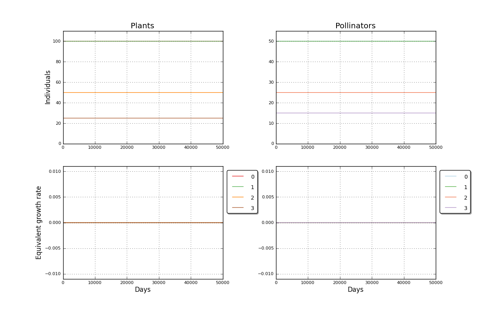

Binomial simulated mutualistic interaction. Input file: 4_05K_equilibrio   days: 50000<br>============================================================================<br>User Comment: Red anclada al minimo vital<br>Mutualist interactions enabled<br><br>Plants matrix: <a href='../input/4_05K_equilibrio_a.txt' target=_BLANK>4_05K_equilibrio_a.txt<a><br>Pollinators matrix: <a href='../input/4_05K_equilibrio_b.txt' target=_BLANK>4_05K_equilibrio_b.txt<a><br>Plant species: 4<br>Plant initial populations [100, 100, 50, 25]<br>Pollinator species: 4<br>Pollinator initial populations [50, 50, 25, 15]<br>Elapsed time 20.27 s<br><br>Created 2012-07-08 17:09:29.140000<br><br><br>Populations evolution picture<br><table border=0><tr><td></td></tr></table><P>